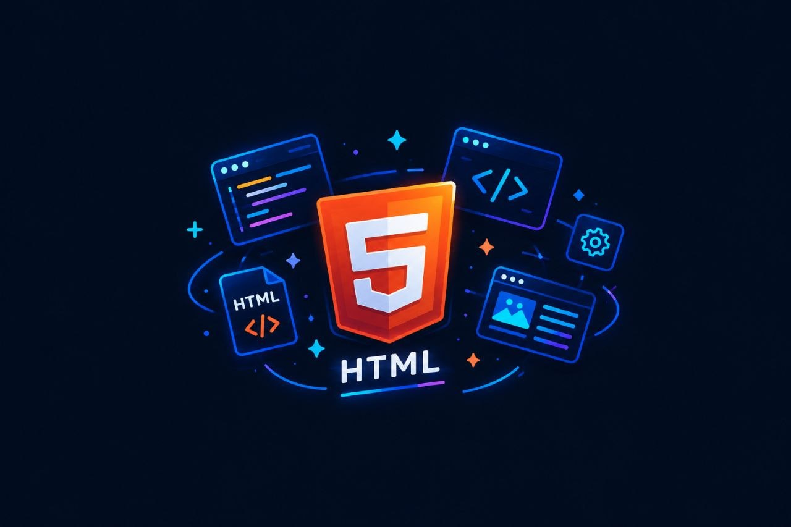
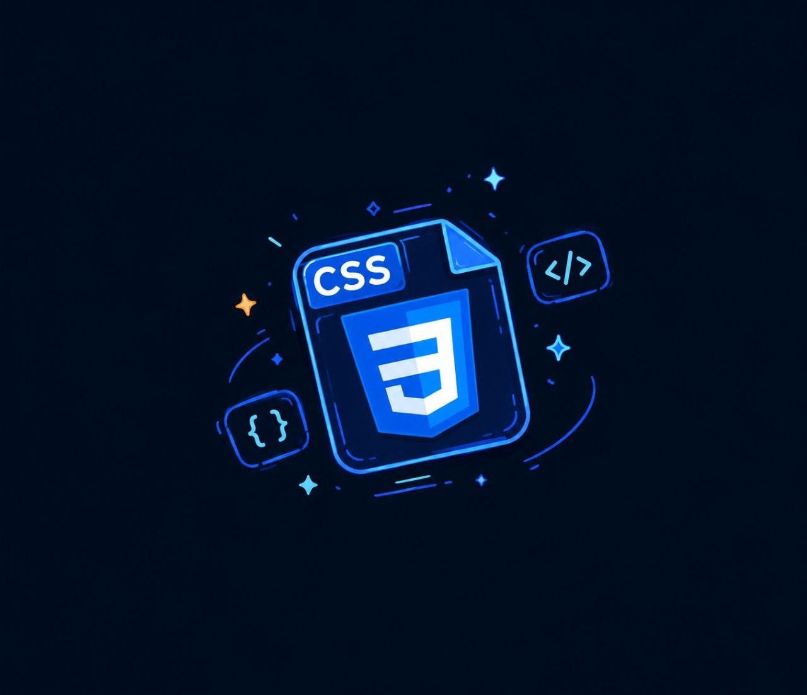

مطور واجهات أسطر برمجة حديثة (Front-End Developer)، أعمل على تصميم وبناء واجهات تفاعلية ومريحة للمستخدم باحترافية.
حاصل على شهادة Meta الدولية
My learning journey in Front-End Development started with HTML,
where I learned how to structure web pages. Then,
I moved on to CSS to bring my designs to life with colors, layouts, and animations.
After that, I explored JavaScript, which helped me understand programming logic and create interactive web experiences.
Finally, I started learning React,
taking my skills to the next level by building modern and dynamic user interfaces.
Each technology has been an important step in my journey, and I am always excited to learn more, improve my skills, and turn my ideas into reality.

